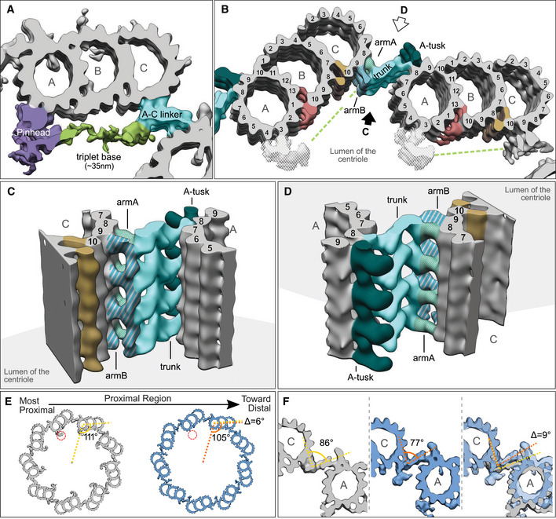

basal body A-tusk
A microtubule-associated subassembly in the proximal region of a ciliary basal body, identified in Paramecium tetraurelia as a protruding density between A-microtubule protofilaments A8 and A9, adjacent to but distinguishable from the A-C linker. [DOI:10.15252/embj.2020106246]

NCBITaxon:5888) · Nikolai Klena, Maeva Le Guennec, Anne‐Marie Tassin, Hugo van den Hoek, Philipp S Erdmann, Miroslava Schaffer, Stefan Geimer, Gabriel Aeschlimann, Lubomir Kovacik, Yashar Sadian, et al.; CC BY, via PubMed Central · CC_BY_4_0 · source: PMC PMC7667884.1 embj2020106246-fig-0005 · DOI:10.15252/embj.2020106246Synonyms: A-tusk; centriole A-tusk
Part of: GO:0036064
Canonical examples
NCBITaxon:5888Paramecium tetraurelia — Cryo-ET and subtomogram averaging of isolated basal bodies resolve the A-tusk in Figure 5B-D and Figure EV5C-E. Cortical units were isolated from d4-2 and Delta-CenBP1; the figures are not assigned to one strain. The proximal-region analysis used 11 tomograms containing 16 basal bodies with intact proximal regions. [DOI:10.15252/embj.2020106246]
Physical properties
- OTHER: 3.3 and 5.2
UO:0000018(Axial separation annotations in Paramecium tetraurelia Figure EV5E: the position of A-tusk 2 on one triplet lies 5.2 nm below the upper and 3.3 nm above the lower A-tusk 1 positions on the neighboring triplet. The original figure was visually inspected. These are two static, pairwise offsets in the depicted reconstruction, not means, uncertainty bounds, A-tusk dimensions, a universal axial repeat or an assembly time course. No replicate count or error estimate is supplied for these annotations.) [DOI:10.15252/embj.2020106246]
Discussions
- CURATION_TODO (RESOLVED): Keep the A-tusk distinct from the A-C linker and other basal-body densities. A named morphological subassembly is not the entire basal body or an asserted protein.
- CURATION_TODO (OPEN): Identify native A-tusk constituents and determine its specific biological role. A segmented protrusion and a static spatial offset do not establish molecular membership or function.
- CURATION_TODO (RESOLVED): Do not transfer neighboring A-C-linker protein assignments into A-tusk composition. An assignment to a connected assembly in another species does not identify this density.
- CURATION_TODO (RESOLVED): Distinguish neighboring-triplet offsets from a biological repeat or mechanical measurement. Reconstruction sampling and adjacent-module annotations are not A-tusk dimensions.
- CURATION_TODO (RESOLVED): Keep the directly supported example separate from cross-species linker comparisons. A multipanel comparison does not establish the same named density in every illustrated taxon.
Datasets
- Paramecium microtubule triplet from the start of the proximal region (
EMDB:EMD-10729) · OTHER · STRUCTURAL_IMAGING
Organism: Paramecium tetraurelia · Platform: cryo-electron tomography and subtomogram averagingNative released-entry metadata verifies the title, taxon 5888, DOI and PMID:32954513. The paper lists EMD-10726 through EMD-10729 and describes combining global triplet and locally aligned A-C-linker maps to display adjacent triplets. EMD-10727 is the proximal A-C-linker-focused deposit; EMD-10726 and EMD-10728 have end-of-proximal-region titles. Sample-name fields repeat start-region wording, so entry titles distinguish the deposits. Only metadata and links are retained; no map volume was downloaded and no exact structure xref is asserted.
Evidence
DOI:10.15252/embj.2020106246Klena et al. 2020, PMID:32954513. Checksum-verified PMC7667884.1 Results, Paramecium preparation and A-C-linker averaging Methods, Figure 5, Figure EV5 and Data availability inspected. Both original figures were visually inspected; Figure 5 is hosted unchanged. Named segmented densities support morphological identity and placement, not a native protein assignment.
Curation history
2026-10-04T15:56:03Zcodex · CREATED_RECORD — Scaffolded by scripts/new_record.py2026-10-04T15:58:26Zcodex · CURATED_RECORD — Added the native Paramecium A-tusk example, basal-body parthood, scoped axial-offset annotations, deposited triplet-map context and inspected CC BY figure. Distinguished adjacent linker proteins and processing intervals from A-tusk identity, composition and repeat length; retained molecular role and distribution as unresolved rather than inferring mechanisms or homology.